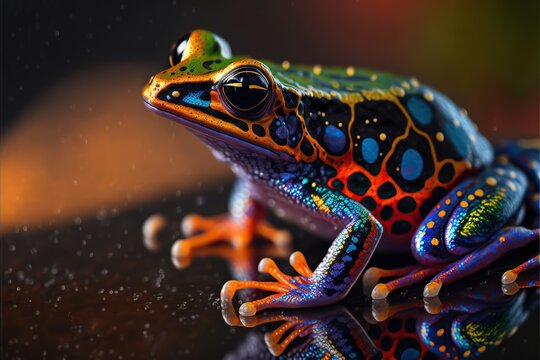
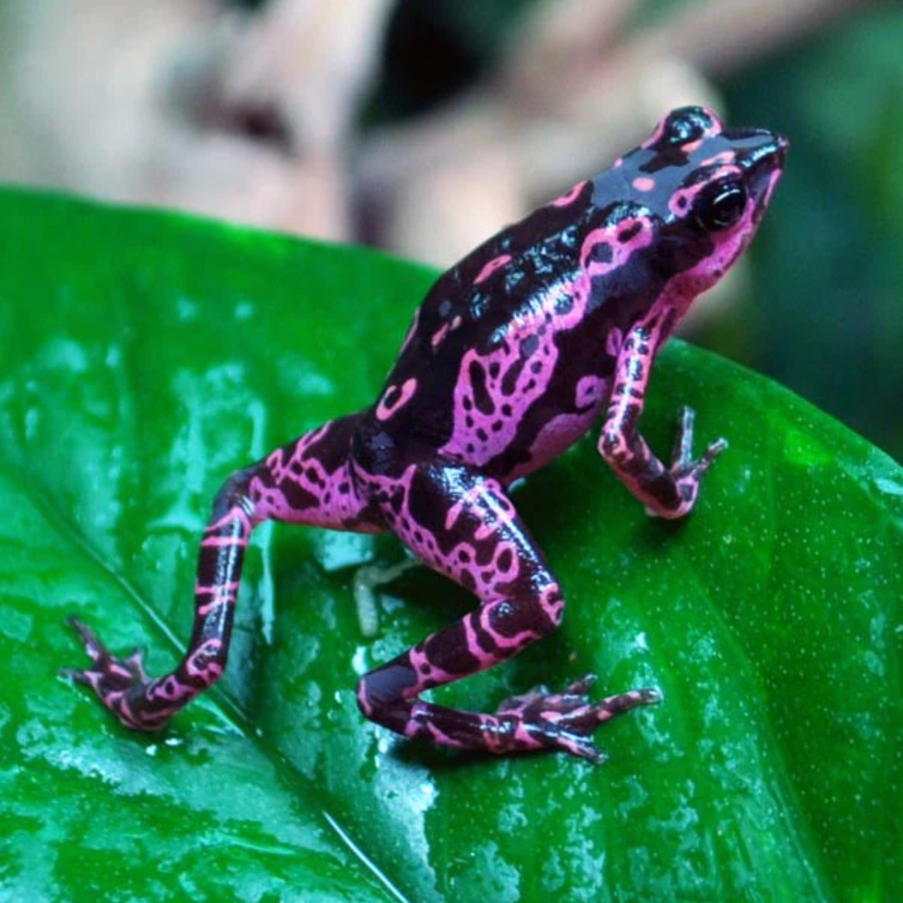

Dart Frog Information
Dart Frogs are one of the worlds most posionus animals. One Frog can kill up to 10 humans. They live in tropical areas of the world.
Baby Dart Frogs
After the female frogs lay the eggs the males are actually the ones who take care of the eggs. They protect the eggs until they turn into tadepoles. Once they are tadepoles the male frogs will carry the tadepoles to a new body of water.
 Expansions
Expansions
Dart Frogs Colors
Dart Frogs bright colors show how poisionus they are. Frogs get their posion by their diet. Their deit consist of flys and small bugs. So frogs that are taken care of in a Zoo are less posionus because their deit is controlled.
 About Frogs